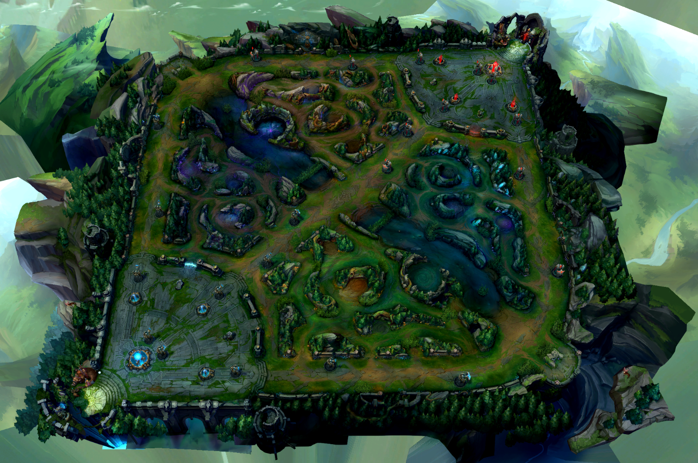
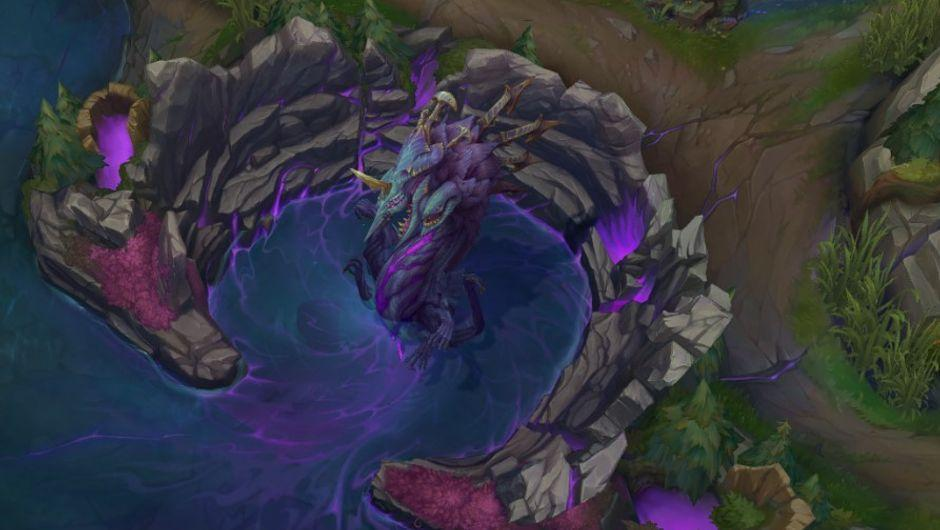
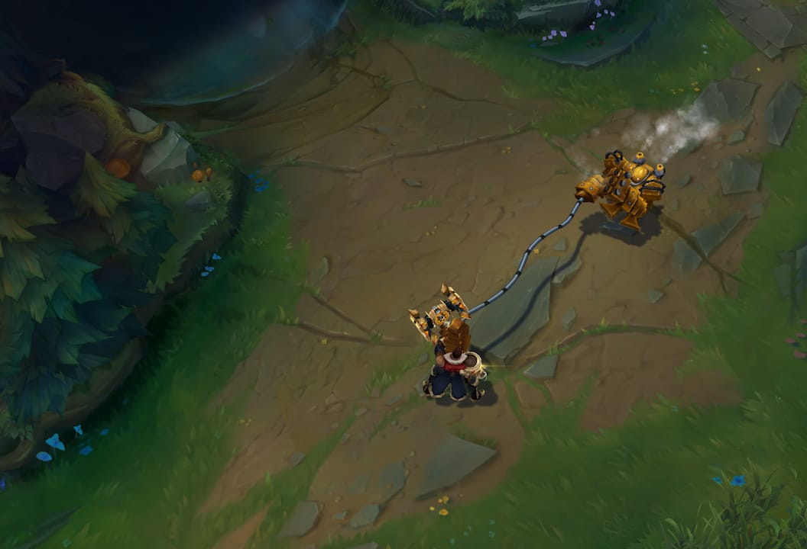
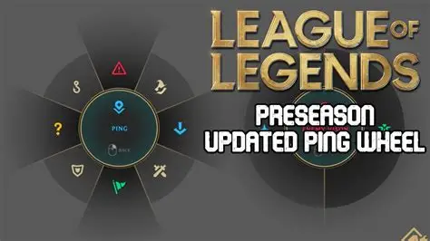
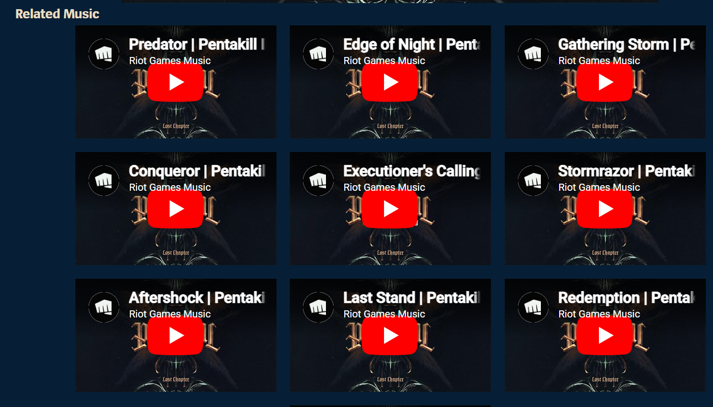
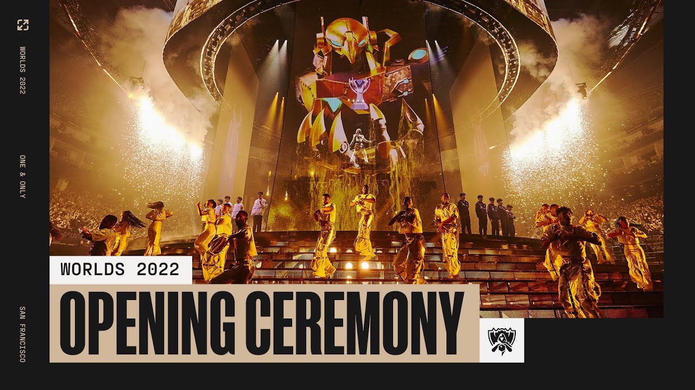
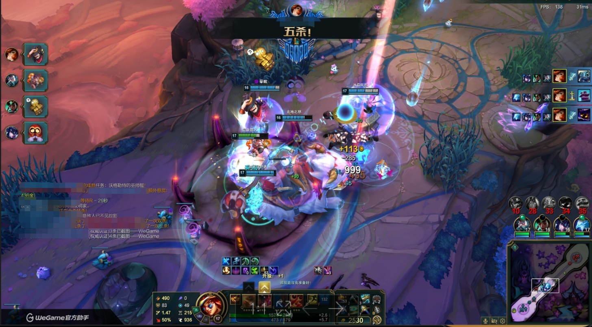

PROJECT 2 EXPLORING GAMING CULTURE TEXT BASED DESIGN UNHEARD How League of Legends built a language nobody knows they're speaking
|

OPENING
Before the Nexus falls

The map goes quiet. You have not looked at the minimap in thirty seconds, but you know something is wrong. Not from anything you have read or calculated. From what you have heard.
The Baron Nashor spawn sound. And there comes a low, resonant, subsonic rumble, and it comes to your chest before your brain identifies it. Then, a hostile recall sound cuts off in the middle of the chime. Someone stopped backing. And over all of this, nearly unnoticed, the score of the game has changed. The quiet early-game background music changed to something more percussive, more tense, a buildup of suspense that you would not be able to define were you to ask, but you sense as a throb in the side of your ribs.
You did not read any of that. You heard it. And you responded before you consciously understood why.
"This is not atmosphere. This is language."
Over sixteen years, League of Legends has cultivated a second language into the nervous systems of its players, which does not require translation to cross the linguistic frontiers, and which has become so strong that it can now leave the game and restructure the popular culture of the world.
Most players who speak it fluently do not know they are speaking it at all.
THE ARGUMENT Sound in LoL is not decoration. It is a cognitive system, a communication language, an invisible emotional architect, and a global cultural force, all at once. |
COGNITION The language your brain learned without you  Champion ability: sound before sight There is a sonic signature of every champion in League of Legends. Mordekaiser's ultimate, that low metallic displacement, does not merely indicate danger. It triggers a physical startle response in experienced players before identification is complete. The hook created by Blitzcrank creates a micro-dodge reflex. Fiddlestick's ultimate, that screen-darkening shriek, produces something closer to dread than any visual effect alone could achieve. It is not by chance that it was designed so. The study carried out in 2024 using League of Legends specifically discovered that character sounds led to statistically significant effects of immersion and identification of avatars. When players had freedom to explore the full map, the effects became even more pronounced. Haehn, L., Schlittmeier, S. J., & Böffel, C. (2024). Exploring the Impact of Ambient and Character Sounds on Player Experience in Video Games. Applied Sciences, 14(2), 583. https://doi.org/10.3390/app14020583 A more comprehensive literature review of 26 studies established that the most frequently researched construct in game audio studies is immersion, and that character sounds influence it by creating an action-coupling that is audible, and which develops a distinct relationship between action and result. Nunes, C., & Darin, T. (2024). Echoes of Player Experience: A Literature Review on Audio Assessment and Player Experience in Games. Proceedings of the ACM on Human-Computer Interaction, 8(CHI PLAY), Article 304. https://doi.org/10.1145/3677069 "Character sounds aid in creating a more realistic game world by acting as auditory action feedback." — Haehn et al., 2024, p. 10
|
COMMUNICATION
Five strangers, one sound

In 2022, Riot expanded LoL's ping system from a handful of signals to a comprehensive non-verbal communication toolkit. Retreat. On My Way. Assist Me. Danger. A group of five players of five different nationalities, who have nothing in common but sound, can organize, warn, and win using only sound.
In a 2025 qualitative study of 22 players in real-ranked games, something more revealing was observed: players do not act as ping information tools. They count on them as a signal of trust.
Lee, J., Kim, S., Park, Y. S., Kim, J., Jang, J., & Seering, J. (2025). Less Talk, More Trust: Understanding Players' In-game Assessment of Communication Processes in League of Legends. In N. Yamashita, V. Evers, K. Yatani, X. Ding, B. Lee, M. Chetty, & P. Toups-Dugas (Eds.), Proceedings of the 2025 CHI Conference on Human Factors in Computing Systems (pp. 1–17). ACM. https://doi.org/10.1145/3706598.3714226
Such frequent verbal communication (typing in chat, with or without content) is perceived by the teammates as a red flag. Staying on the keyboard, playing rather than typing, was read as commitment. Action, and its aural equivalent, the ping, is a way of saying something that words cannot.
"Players value a teammate's commitment to the game, often demonstrated through action rather than explicit communication." — Lee et al., 2025, p. 2
THE PARADOX OF SILENCE In most collaborative settings, more communication equals better outcomes. In League of Legends, research shows the opposite: frequent verbal communication is associated with anticipated toxicity, while silence and precise pings signal reliability. Sound designed the trust system. |
ADAPTIVE SCORE The music nobody hears  League of Legends has a dynamic adaptive music system. Most players cannot describe it. That is the point. The score varies according to game state, as ambient layers at the beginning of the game give place to tension cues in the middle of the game, objective pressure cues escalating to dramatic swells, and base sieges graded with urgent percussion. There is no announcement. It operates below the level of decision and influences the emotional register of every moment without entering into consciousness. Peng and Bai's 2025 study found that audio aesthetics in LoL significantly affected enjoyment and personal gratification, and that high-arousal music specifically influenced players' physiological arousal and their perception of challenge and mastery. Peng, L.-H., & Bai, M.-H. (2025). Examining the Mediating Effects of Game User Experience Satisfaction on Continuance Intention: A Case Study of League of Legends. IEEE Access, 13, 63792–63814. https://doi.org/10.1109/ACCESS.2025.3559632 Haehn et al. also discovered that ambient sound moved towards the induction of flow states, even when the participants were not conscious of the fact that the soundscape had changed. In his argument, Kirke (2018) posits that if the soundtrack is the game and not a layer of the game, then there is no difference between audio and interaction whatsoever. Kirke, A. (2018). When the Soundtrack Is the Game: From Audio-Games to Gaming the Music. In D. Williams & N. Lee (Eds.), Emotion in Video Game Soundtracking (pp. 65–83). Springer International Publishing. https://doi.org/10.1007/978-3-319-72272-6_7 "The best game music is the music you forget is playing." |
CULTURAL REACH
Worlds is bigger than the game

POP/STARS was a release of K/DA in 2018. It has garnered more than 65 million views on YouTube. It charted. Played in clubs. Individuals who had never played League of Legends before were familiar with all the words.
POP/STARS was followed by True Damage, Pentakill's III: Lost Chapter, Seraphine's solo career arc, Imagine Dragons' Enemy soundtracking the Arcane Netflix series, and Lil Nas X performing Star Walkin' as the 2022 Worlds anthem in front of a global live audience. These were not marketing campaigns dressed as music. They were music that created their own audiences - audiences that did not have to have any association with the game.
Škripcová, L. N. (2022). Convergence in Digital Games: A Case Study of League of Legends. Acta Ludologica, 5(2), 86-103.
Škripcová's 2022 case study documents how K/DA, Pentakill, and True Damage function as independent artists on streaming platforms, discoverable without any knowledge of their origins in a MOBA game. The sonic identity Riot created within LoL turned into the raw material of a music ecosystem that reached the audience who did not play a match in the game.
Game audio has crossed a threshold. It is no longer about games. It is simply culture.
POSITION Listen or die.  The literature review presented by Nunes and Darin demonstrates that a burning gap exists in research on audio: although it has proven to have a significant effect on immersion, identification with an avatar, flow, and emotional involvement, it is still underdeveloped in comparison with visual design. The field has been looking at screens when it should have been listening. This reflects a greater cultural blindness. Writing and reading are taught in schools. They teach visual literacy to some degree. They fail to impart sonic literacy, the skill of learning to think through sound, to feel through sound, to communicate through sound, and to think culturally through sound. And yet League of Legends has been educating millions of players daily, without calling it education, without calling it language, without calling it anything at all. "What games teach us about sound, schools have never taught at all." I had been playing League of Legends for a long time before I could have explained any of this. I had heard what the noises were warning. I understood when an urgency was in a ping. I was familiar with the affective form of a Baron battle with its score in advance of recognising that I was listening to music. I was taught a language that I had not realized I was learning. It is what makes the audio design of LoL one of the most remarkable ones, not its technical refinement, which is also quite high, but its invisibility. The lingo that fades out of use is the best. CASUAL VS CORE PLAYERS Audio aesthetics have a more pronounced effect on enjoyment for casual players; sound is the entry point for new players. (Peng & Bai, 2025) THE AUDIO-GAME LIMIT CASE When an entire game is built on sound as its only mechanic, players achieve high usability and immersion, proving sound can carry the full interactive burden alone. (Rovithis et al., 2019) League of Legends built a language, hid it inside a game, and taught it to over 100 million people who mostly have no idea they are speaking it. Listen more carefully. It was always there. |
REFERENCES Haehn, L., Schlittmeier, S. J., & Böffel, C. (2024). Exploring the Impact of Ambient and Character Sounds on Player Experience in Video Games. Applied Sciences, 14(2), 583. https://doi.org/10.3390/app14020583 Kirke, A. (2018). When the Soundtrack Is the Game: From Audio-Games to Gaming the Music. In D. Williams & N. Lee (Eds.), Emotion in Video Game Soundtracking (pp. 65–83). Springer International Publishing. https://doi.org/10.1007/978-3-319-72272-6_7 Lee, J., Kim, S., Park, Y. S., Kim, J., Jang, J., & Seering, J. (2025). Less Talk, More Trust: Understanding Players' In-game Assessment of Communication Processes in League of Legends. In N. Yamashita, V. Evers, K. Yatani, X. Ding, B. Lee, M. Chetty, & P. Toups-Dugas (Eds.), Proceedings of the 2025 CHI Conference on Human Factors in Computing Systems (pp. 1–17). ACM. https://doi.org/10.1145/3706598.3714226 Nunes, C., & Darin, T. (2024). Echoes of Player Experience: A Literature Review on Audio Assessment and Player Experience in Games. Proceedings of the ACM on Human-Computer Interaction, 8(CHI PLAY), Article 304. https://doi.org/10.1145/3677069 Peng, L.-H., & Bai, M.-H. (2025). Examining the Mediating Effects of Game User Experience Satisfaction on Continuance Intention: A Case Study of League of Legends. IEEE Access, 13, 63792–63814. https://doi.org/10.1109/ACCESS.2025.3559632 Rovithis, E., Moustakas, N., Floros, A., & Vogklis, K. (2019). Audio Legends: Investigating Sonic Interaction in an Augmented Reality Audio Game. Multimodal Technologies and Interaction, 3(4), 73. https://doi.org/10.3390/mti3040073 Škripcová, L. N. (2022). Convergence in Digital Games: A Case Study of League of Legends. Acta Ludologica, 5(2), 86-103. |